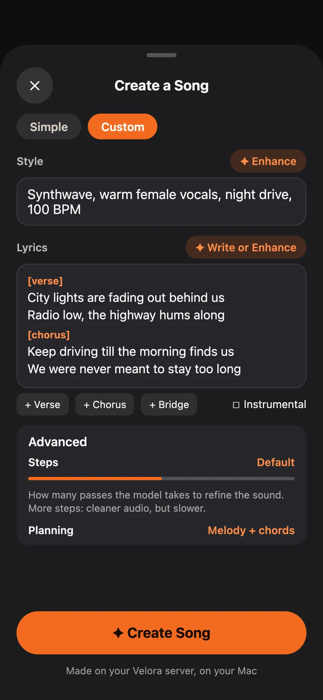
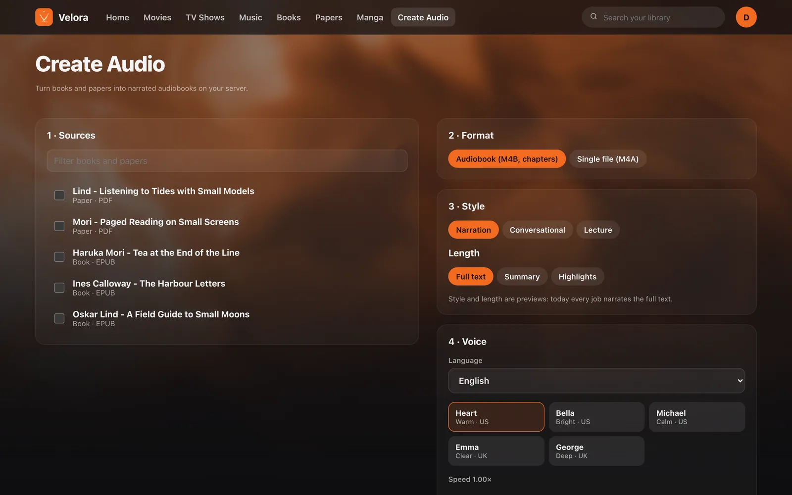
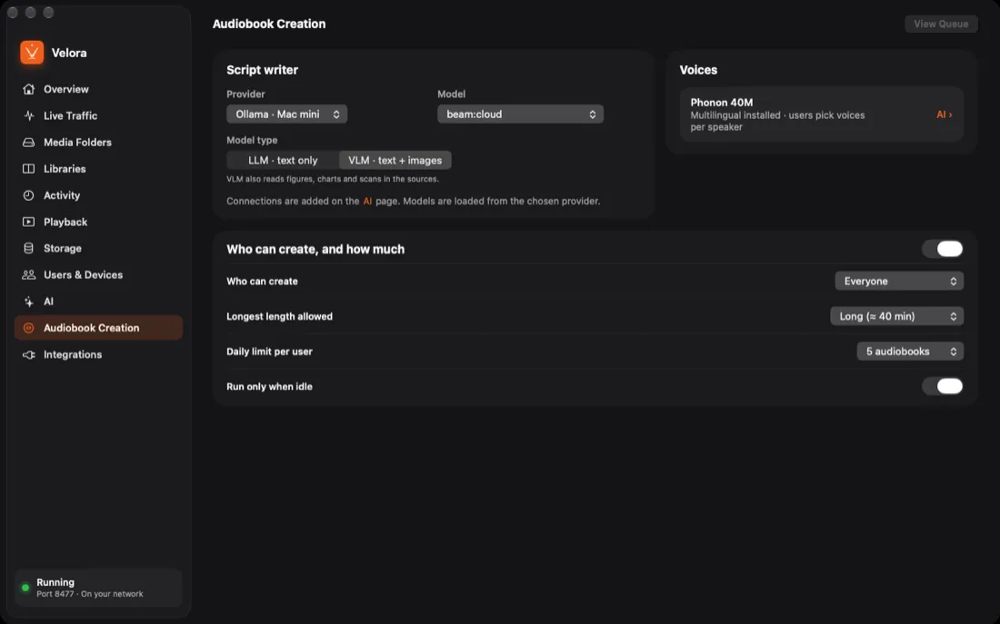

AI that runs on your Mac.
Velora's AI features run on the server Mac with MLX, Apple's machine-learning framework for Apple silicon. They wait while you stream, they never touch your media folders, and you decide who can use them.
Describe a song. Velora sings it.
New in 2.6Velora generates songs with YuE2-3B, ported natively to MLX. In Simple mode you write one line, and the language model on the AI page fills in the title, style, lyrics and length. In Custom mode you write the style and lyrics yourself, with [verse], [chorus] and [bridge] sections, or tick Instrumental.
- ✦ Enhance improves the style; ✦ Write or Enhance drafts or polishes lyrics
- Advanced: Steps, Planning (melody and chords) and Guidance, each explained
- Progress while it works, and a Created by You shelf for your songs
- On Apple TV: describe a song, Instrumental, and a Quality menu

How a song is made
- Plan a melody and chords for each section.
- Generate the music tokens with YuE2's transformer.
- Synthesize the sound with flow matching; more steps sound cleaner but take longer.
- Decode to 48 kHz stereo and save it as AAC with a generated cover.
Only one song is made at a time, the model is loaded only while it runs, and it never runs at the same time as the recommendations model. Admins choose the precision (4, 6 or 8-bit, quantized on your Mac from the original weights), the schedule, the longest song and how many songs each person can make per day. Songs are saved per account in the folder you choose.
Documents become audiobooks.
Turn EPUBs, PDFs, papers, slides, notes and web pages into a chaptered audiobook, a summary, a lecture or a conversation between hosts. The script comes from the language model you pick; the voices are generated on your Mac.
- A named cast: Ava, Mira and Lena; Theo, Jonas and Sam. Speakers call each other by name
- Fresh personalities for every audio, overridable per voice
- Optional intro and outro, and a timed transcript in the player
- Saved straight into your Audiobooks, marked “Generated with AI on Velora”


Your taste, computed at home.
New in 2.6Velora runs EmbeddingGemma 2 on your Mac, a native Swift port on MLX, to understand titles, descriptions, cover art and, new in 2.6, the sound of your music and audiobooks. Rankings come from each account's own history, so “Because you watched”, “More like this” and “Related to your highlights” are yours alone.
- Choose 4, 6 or 8-bit, or full precision, on the AI page
- Audio embeddings for music and audiobooks can be switched off
- Runs at background priority and pauses while a video streams

Tidy titles, suggested, never forced.
An optional background job suggests clean titles, matches for unmatched items, and tags for genre, era, language, mood and topic. Every change is a suggestion with a confidence that you accept, edit or undo on the server's Review page. Nothing is ever renamed on disk.

Research, automations and scores
Deep Research
Ask a question and the language model you chose researches the web and writes it up as a report, or turns it into audio you can listen to. Reports land in an Academic Papers library.
Automations
Each person's own jobs that run on the server while your devices sleep: research a question every morning, turn every new paper or book into a podcast, make a song of the day, or make every new PDF score interactive.
Interactive PDF scores
Make Interactive reads the notes in a PDF score with Audiveris on your Mac, so it plays with the cursor, loops and parts. It can wait until nothing plays at all, and the score shows under Creating while it's read.
Where the AI runs. Music generation, narration voices and recommendations run on your Mac. For writing scripts and lyrics you choose a provider on the AI page: a model on your own Mac (Nativ or Ollama), or a cloud provider with your own key. Only a cloud provider receives text, and only the text it needs. See AI models and Privacy.